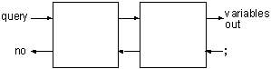
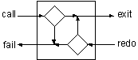
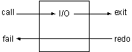
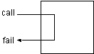
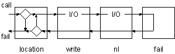

1. 混合查询
我们可以把简单的查询连接起来，组成一些较复杂的查询。例如，如果我们想知道厨房里能吃的东西，就可以向Prolog进行如下的询问。
?- location(X, kitchen), edible(X).
简单的查询只有一个目标，而混合查询可以把这些目标连接起来，从而进行较为复杂的查询。上面的连接符号','是并且的意思。
上面的式子用语言来描述就是“寻找满足条件的X，条件是：X在厨房里，并且X能吃。”如果某个变量在询问中多次出现，则此变量在所有出现的位置都必须绑定为相同的值。所以上面的查询只有找到某一个X的值，使得两个目标都成立时，才算查询成功。
每次查询所使用的变量都是局部的变量，它只在本查询中有意义，所以当我们进行了如下的查询后，
?- location(X, kitchen), edible(X).
X = apple ;
X = crackers ;
no
查询结果中没有broccoli（椰菜），因为我们没有把它定义为可吃的东西。此后，还可以用X进行其他的查询。
?- room(X).
X = kitchen ;
X = office ;
X = hall ;
...;
no
除了使用逻辑的方法理解混合查询外，还可以通过分析程序的运行步骤来理解。用程序的语言来说就是“首先找到一样位于厨房的东西，然后判断它能否食用，如果不能，就到厨房里找下一样东西，再判断能否食用。一直如此重复，直到找到答案或把厨房的东西全部查完为止。”
请参照下图来理解。

调用查询后，程序将按照下面的步骤运行，请参照上图来理解。
- 搜索第一个目标，如果成功转到
2，如果失败则回答'no'，查询结束。 - 搜索第二个目标，如果成功转到
3，如果失败转到1。 - 把绑定的变量的值输出。用户输入
';'后转到2。
上面的例子中只有一个变量，下面我们再来看一个有两个变量的例子。
?- door(kitchen, R), location(T,R).
R = office
T = desk ;
R = office
T = computer ;
R = cellar
T = 'washing machine' ;
no
上面的查询用逻辑的语言来解释就是：“找房间R，使得从厨房到房间R有门相连，并且把房间R中的物品T(这里是房间R的所有物品）也找出来。”
下面是此查询的单步运行过程。
Goal: door(kitchen, R), location(T,R)
1 CALL door(kitchen, R)
1 EXIT (2) door(kitchen, office)
2 CALL location(T, office)
2 EXIT (1) location(desk, office)
R = office
T = desk ;
2 REDO location(T, office)
2 EXIT (8) location(computer, office)
R = office
T = computer ;
2 REDO location(T, office)
2 FAIL location(T, office)
1 REDO door(kitchen, R)
1 EXIT (4) door(kitchen, cellar)
2 CALL location(T, cellar)
2 EXIT (4) location('washing machine', cellar)
R = cellar
T = 'washing machine' ;
2 REDO location(T, cellar)
2 FAIL location(T, cellar)
1 REDO door(kitchen, R)
1 FAIL door(kitchen, R)
no
1.1. 内部谓词
讲了这么多了，我们还只是用到了Prolog的一些语法，完全没有使用Prolog提供的一些内部的函数，我把这些内部函数称为内部谓词。和其他的程序语言一样，Prolog也提供了一些基本的输入输出函数，下面我们要编写一个较复杂的查询，它能够找到所有厨房里能够吃的东西，并把它们列出来。而不是像以前那样需要人工输入';'。
要想完成上面的任务，我们首先必须了解内部谓词的概念。内部谓词是指已经在Prolog中事先定义好的谓词。在内存中的动态数据库中是没有内部谓词的子句的。当解释器遇到了内部谓词的目标，它就直接调用事先编好的程序。
内部谓词一般所完成的工作都是与逻辑程序无关的，例如输入输出的谓词。所以我们可以把这些谓词叫做非逻辑谓词。
但是这些谓词也可以作为Prolog的目标，所以它们也必须拥有和逻辑谓词相同的四个端口：Call、Fail、Redo和Exit。
下面介绍几个常用的输出谓词。
write/1
此谓词被调用时永远是成功的，并且它可以把它的参数作为字符串输出到屏幕上。当回溯时，它永远是失败，所以回溯是不会把已经写到屏幕上的字符又给删除的。
nl/0
此谓词没有参数，和write一样，从Call端口调用时总是成功的，从Redo端口回溯时总是失败的，它的作用是在屏幕上输出一个回车符。
tab/1
此谓词的参数是一个整数，它的作用是输出n个空格，n为它的参数。其控制流程与上面两个相同。
下图是一般情况下的Prolog目标的内部流程控制示意图。我们将使用此图和内部谓词的流程控制图相比较。


I/O谓词不会改变变量的值，但是它们可以把变量的值输出。
还有一个专门引起回溯的内部谓词fail/0，从它的名字不难看出，它的调用永远是失败的。如果fail/0从左边得到控制权，则它立即把控制权再传回到左边。它不会从右边得到控制，因为没法通过fail/0把控制权传到右侧。它的内部流程控制如下：

以前我们是靠使用';'来进入目标的Redo端口的，并且变量的值的输出是靠解释器完成的。现在有了上面几个内部谓词，我们就可以靠I/O谓词来显示变量的值，靠fail谓词来引起自动的回溯。
下面是此查询语句及其运行结果。
?- location(X, kitchen), write(X) ,nl, fail.
apple
broccoli
crackers
no
下面是此查询的流程图。

下面是此查询的单步调试过程。
Goal: location(X, kitchen), write(X), nl, fail.
1 CALL location(X, kitchen)
1 EXIT (2) location(apple, kitchen)
2 CALL write(apple)
apple
2 EXIT write(apple)
3 CALL nl
3 EXIT nl
4 CALL fail
4 FAIL fail
3 REDO nl
3 FAIL nl
2 REDO write(apple)
2 FAIL write(apple)
1 REDO location(X, kitchen)
1 EXIT (6) location(broccoli, kitchen)
2 CALL write(broccoli)
broccoli
2 EXIT write(broccoli)
3 CALL nl
3 EXIT nl
4 CALL fail
4 FAIL fail
3 REDO nl
3 FAIL nl
2 REDO write(broccoli)
2 FAIL write(broccoli)
1 REDO location(X, kitchen)
1 EXIT (7) location(crackers, kitchen)
2 CALL write(crackers) crackers
2 EXIT write(crackers)
3 CALL nl
3 EXIT nl
4 CALL fail
4 FAIL fail
3 REDO nl
3 FAIL nl
2 REDO write(crackers)
2 FAIL write(crackers)
1 REDO location(X, kitchen)
1 FAIL location(X, kitchen)
no
1.2. after
下面请你分析一下，
?- door(kitchen, R), write(R), nl, location(T,R), tab(3), write(T), nl, fail.
的输出的结果是什么呢？